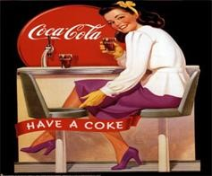

Con la compra de esta bebida por empresario Asa Griggs Candler, este, muy astuto supo utilizar las correctas técnicas de venta y con un buen sofisticado uso del Marketing, logró apoderarse de un país (EEUU) logrando que poco a poco, con mucho esfuerzo y dedicación convirtiera esta bebida en una de las más consumidas en el siglo XX, obteniendo unas ganancias enormes y fruto de estas, poder ampliar más la empresa, venciendo límites y fronteras y formando más envasadoras en otros países, como lo fueron, Panamá, Cuba y otros países de Sudamérica, ya que por la zona geográfica la gente tiende a consumir más bebidas heladas casi todo el año, dando un crecimiento muy fuerte a la empresa y acompañado de grandes publicidades en anuncios y medios de comunicación tanto escritos como visuales. Dando un boom a esta gran marca y utilizando una gran estrategia de marketing, contratando estrellas de música y de cine reconocidas mundialmente en anuncios de televisión y radiales logrando acaparar hasta los más mínimos lugares del planeta, se pudo posesionar la marca y ganar un prestigio de fama mundial como lo es hasta la fecha, con un sinfín de publicidades y anuncios que rellenan nuestras mentas de publicidad a tal punto que hoy en día la Coca Cola la podemos encontrar en cualquier parte del mundo, desde áfrica, china, India, hasta países en guerra que han hecho de una a otra manera una gran bebida.
Para poder llegar al público se dieron cuenta que era de suma importancia la publicidad y lo que faltaba era el método, por tal motivo se dieron cuenta que era esencial llegar a la audiencia por medio de la radio, televisión, e imágenes visuales. Por tal motivo la coca cola invirtió millones de dólares en poder hacer llegar su marca a diferentes lugares y para eso tuvieron que arriesgar muchas cosas sabiendo que era muy importante que para crecer se necesitaba arriesgar. La empresa coca cola se caracteriza por los diversos productos en tamaño y sabor que saca al mercado, teniendo como objetivo destacarse como una marca muy reconocida en lo que se refiere a bebidas gaseosas.
Uno de los objetivos más resaltantes en esta empresa es lograr la meta de ser la marca más reconocida entre marcas de bebidas gaseosas y ser la más adquirida en el mercado del mundo. Ya que se ha ganado un prestigio de fama mundial. Una de las Fortalezas que tiene este producto es que es reconocido como un producto único adquirido en la gran mayoría por todas las familias y hogares por tal motivo la hace reconocido y ser de confianza a la hora de comprarla ya que su nombre demuestra prestigio y confianza.
La Oportunidad que tiene en muchos países es que destaca como el más vendido en muchos países del mundo entero con relación a otras bebidas gaseosas es decir es una marca muy reconocida y nombrada a nivel mundial. Una de las debilidades que podemos encontrar en esta empresa es que por circunstancias dentro del mecanismo de trabajo, con el uso diario de las máquinas que fabrican este producto pueden fallar o pueden dañarse con el pasar del tiempo por desgaste o por x motivos que a la larga ocasionarían un gran daño y perdidas a la empresa, y lo más común que se puede presentar es en las maquinas por tal motivo lo que se debería hacer es adquirir máquinas nuevas con las mismas o similares características de las anteriores. Dentro de la Amenaza existente está la subida de impuestos a dichas bebidas y debido a esto y a varias razones económicas la gente se inclinaría a comprar lo más barato para sus hogares y gastar menos con tal de que se lleven un buen producto y es por eso que la coca cola pensó en las necesidades del público y buscó una manera de poder vender un producto acto para el consumo humano pero con un precio al alcance de todos y que sea de calidad y fue la coca cola que tuve que romper los esquemas de que solo las personas de recursos económico solo podían acceder a este producto por eso se rompió ese mito y se cree que es por este motivo lo que ayudo a coca cola a llegar a donde está por su enfoque global de las cosas sin pensar en un sector de masas, sino en un ámbito general dando lo mejor de si.
Es cuando la coca cola se considero muy democrática tanto así que muchos críticos de ventas dieron su punto y llegaron a la conclusión que la coca cola tiene un gran éxito en ventas por porque lo toma desde el rico hasta el pobre de la esquina, desde el anciano de mi barrio hasta el niño del costado. Y si hablamos dentro de la empresa notaremos de la Actividad que realiza la empresa, en la de crear diversos productos con distintos sabores para así satisfacer nuestros gustos y las necesidades de los clientes. Y sí que lo logró porque con la llegada de diferentes productos logró un gran alcance en ventas por todo el mundo y mucho más con las grandes publicidades que se llegaron a realizar de planos internacionales.
Si nos ponemos a pensar que con el pasar del tiempo la coca cola ha llegado a la cima de los más alto que puede existir ya que no ha existido otra bebida gaseosa que en su tiempo le halla podido dar una fuerte competición, solo después que llegó la Pepsi y pudo pisarle los talones con una fuerte lucha interna y externa que se han llevado por muchos años hasta la fecha pero con el paso de tiempo han podido ponerse límites y saber hasta donde puede llegar una y donde empieza la otra sin dificultarle el paso. Es muy importante renombrar a la coca cola como una gran empresa que merece un antes y después en lo que se refiere al uso de marketing porque supieron aprovechar las técnicas que cada una tenía y tal es el caso muy grande que puede existir como la coca cola lo logró, su marketing de ventas en muy bien desarrollado y al apostar en eventos gigantes y donde se conoce que mucha gente lo verá, es ahí donde la coca cola invierte y uno de los puntos muy fuertes para consolidar su marca es con la llegada de la publicidad en los eventos deportivos como es el caso de la copa mundial y desde entonces la coca cola se ha pronunciado constantemente sobre ese tipo de eventos para poder dar a conocer su imagen y así llegar a muchos hogares, y que tal que les fue, porque sus ventas llegaron a montos incalculables y por eso desde ese entonces la coca cola se ha pronunciando en cada mundial que hay dando una cantidad de dinero o creando temas musicales,. Lo más importante es entender sus mensajes que siempre nos bombardean en los medios de comunicación.